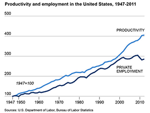

Blog - Projects - About
Technology has always enabled more work to be done using less people. Fundamentally, this is a good thing. Industrial agriculture and fertilizers have, for example, allowed fewer farmers to sustain a larger population, freeing up time for most of the population to pursue other fields of work and study. Without technology, I would not be typing this blog entry because I'd be far too busy hunting, gathering, or cultivating my next meal.
The drawback of this is something the authors of The Second Machine Age call the "bounty" having worse spread across the population. They make the argument that as technology races ahead, many of us (Kodak, included) can and will suddenly find our places in the work world replaced by computers and machines, organized by an individual or small team reaping the profits. While people should be rewarded for their hard work and genius, accumulation of wealth in the hands of fewer and fewer people is incredibly unhealthy in our current economic system.
One of the best, long-term solutions to this scenario is the idea of "Universal Basic Income" (UBI). There are a variety of specific ways to implement UBI, but the basic idea is this: everyone within the society receives income from the government to cover their basic living expenses. Any income performed from "working" would be taxed accordingly but otherwise available for spending on luxuries. This would be made possible by the near-complete takeover of service and labor by computers and machines. When machines are doing our farming, assembling our food, manufacturing our toys, driving us around in electric driver-less taxis, etc. etc. why does the average Joe need to work?
Graph image taken from The Breakthrough. Incidentally, it's provides a good counter-point to the arguments made in The Second Machine Age.